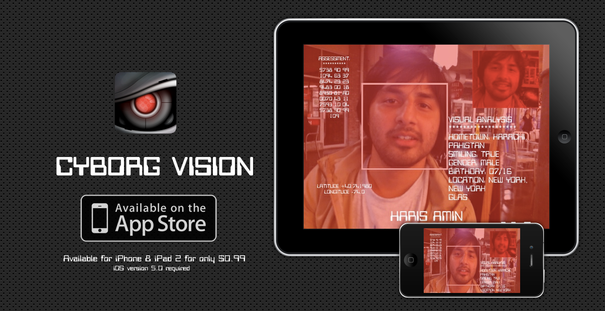
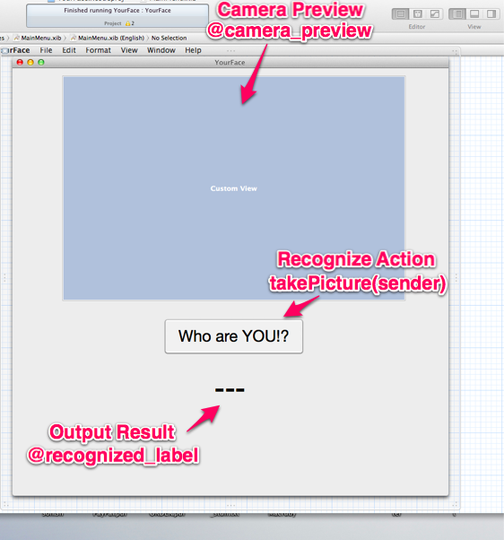
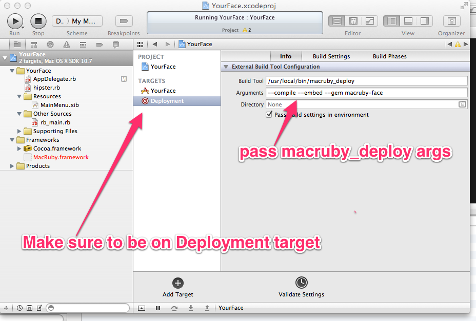

Your Face
with
...in 10 minutes
by Haris Amin
This is where I work

But I also like to hack :)
MacRuby
MacRuby is an implementation of Ruby 1.9 directly on top of Mac OS X core technologies such as the Objective-C runtime and garbage collector, the LLVM compiler infrastructure and the Foundation and ICU frameworks. It is the goal of MacRuby to enable the creation of full-fledged Mac OS X applications which do not sacrifice performance in order to enjoy the benefits of using Ruby.
Get the Funk!
Download the latest Macruby and create a new Project in Xcode!

Blueprint
This is how the UI is going to look like in Interface Builder.
Let's Get up and Setup!
- rb_main.rb initializes our app
- Almost never needs to be modified...
- ...except this time
framework 'avfoundation'
Initialize Your FACE!
We need to initialize our camera to capture video and display a preview of the captured video.
Prepare Session & Ready Device
Press down or up to navigate.
def applicationDidFinishLaunching(a_notification)
#...
session = AVCaptureSession.new
device = AVCaptureDevice.defaultDeviceWithMediaType AVMediaTypeVideo
session.sessionPreset = AVCaptureSessionPreset640x480
width = 640
height = 480
#...
end
Set up input & output
We are setting the camera's input and output AV Foundation objects
def applicationDidFinishLaunching(a_notification)
#...
input = AVCaptureDeviceInput.deviceInputWithDevice device, error:nil
output = AVCaptureVideoDataOutput.new
output.alwaysDiscardsLateVideoFrames = true
session.addInput input
session.addOutput output
#...
end
Setup our Camera Preview
We're adding the video preview as a sublayer
def applicationDidFinishLaunching(a_notification)
#...
@preview_layer = AVCaptureVideoPreviewLayer.layerWithSession session
@preview_layer.frame = [0.0, 0.0, width, height]
@preview_layer.affineTransform = CGAffineTransformMakeScale -1,1
@camera_preview.wantsLayer = true
@camera_preview.layer.addSublayer @preview_layer
#...
end
Start the Session
def applicationDidFinishLaunching(a_notification)
#...
session.startRunning
#...
end
Grand Central Dispatch
GCD is an abstraction layer allowing developers to only focus on business logic without having to worry about the underlying details if you don’t want to. The end result is an optimum use of all the cores available on a machine and truly concurrent code.
Video Sampling
We're going to sample our video output buffers using GCD
def applicationDidFinishLaunching(a_notification)
#...
queue = Dispatch::Queue.new('cameraQueue')
output.setSampleBufferDelegate self, queue:queue.dispatch_object
#...
end
Detect Your Face!
We will use CoreImage's built-in Face Detection capabilites
Face Detection Features
- Core Image gives us a face detection feature
- Each Feature object has NSPoint objects for 3 facial features
- Currently only supports left eye, right eye, and mouth
Initialize detector
We create a Core Image detector when the app launches
def applicationDidFinishLaunching(a_notification)
#...
@detector = CIDetector.detectorOfType "CIDetectorTypeFace", context:nil, options: {CIDetectorAccuracy: CIDetectorAccuracyLow}
#...
end
Implement Delegate
We initialize the captureOutput delegate for where we will detect the features from the current frame
def captureOutput(captureOutput, didOutputSampleBuffer:sampleBuffer, fromConnection:connection)
#...
imageBuffer = CMSampleBufferGetImageBuffer(sampleBuffer)
image = CIImage.imageWithCVImageBuffer(imageBuffer)
features = @detector.featuresInImage(image)
# This uses the detected features to add overlays
# Its an exercise for the viewer :)
add_face
#...
end
Face Recognition is Hard!
Currently Ruby does not have a decent linear algebra library. This is a problem!
*PLEA!*
We need to work on this! Our arch-rival (python) has great bindings for LAPACK & BLAS, we can do this too!
Hope...
There is a lineal algebra library that provides those bindings and has decent solvers. It has installation issues since its been out of date...but we can fix this :)

Let's use Face.com
We will use Face.com's face recognition API from the app
Use Rubygems!
Yes you have to use sudo as long as you installed MacRuby from the installer on the website. It won't mess rvm/rbenv up.
sudo macgem install macruby-face
Deployment Scheme in XCode
We need to tell XCode to compile our rubygem with our project in the XCode Deployment Scheme.
Say Cheese!
We will create an image connection and then asynchronously grab a still capture.
def takePicture(sender)
#...
img_connection = @picture_output.connectionWithMediaType AVMediaTypeVideo
@picture_output.captureStillImageAsynchronouslyFromConnection img_connection, completionHandler: call_back
#...
end
Proc it!
We'll use a good 'ol ruby Proc object to define the callback
def takePicture(sender)
#...
call_back = Proc.new do |img_buffer, error|
image_data = AVCaptureStillImageOutput.jpegStillImageNSDataRepresentation img_buffer
filename = "#{Dir.pwd}/test_pic.jpeg"
image_data.writeToFile(filename, atomically:true)
# You can also write to file the good ol' ruby way if you like :)
# File.open(filename, 'wb') {|f| f.write(image_data.to_str) }
client = Face.get_client(:api_key => @face_key, :api_secret => @face_secret)
resp = client.faces_recognize(:uids => ['all@aminharis7'], :file => File.new(filename, 'rb'), :detector => "normal")
# Do some parsing on the response hash
# .. & set the value of our result
@recognized_label.stringValue = "Nice Face #{pretty_uid} :)"
end
#...
end
DEMO
You WILL learn Cocoa & Obj-C!
...but that's OK!
I love Ruby and I know that many others love Ruby. But let's not be monogamous. Share the love...be a polygamist!
- Haris Amin / @harisamin